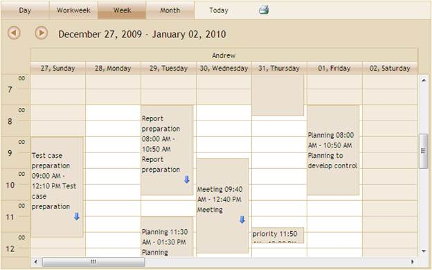

The steps to customize the appearance of Schedule using SchedulePropertiesModel are as follows:
1. Create a model in the application.
2. Add the following code in the Index.aspx file, to create the Schedule control in the view.
|
View[aspx] <%=Html.Syncfusion().Schedule()("FlatSchedule","ScheduleModel") .BindList(columns => { columns.IdField("AppId"); columns.SubjectField("Subject"); columns.LocationField("Location"); columns.StartTimeField("StartTime"); columns.EndTimeField("EndTime"); columns.DescriptionField("Descrip"); columns.OwnerField("Resource"); }) %> |
|
View[cshtml] @( Html.Syncfusion().Schedule()("FlatSchedule","ScheduleModel") .BindList(columns => { columns.IdField("AppId"); columns.SubjectField("Subject"); columns.LocationField("Location"); columns.StartTimeField("StartTime"); columns.EndTimeField("EndTime"); columns.DescriptionField("Descrip"); columns.OwnerField("Resource"); }))
|
3. In Controller, add the Syncfusion.Mvc.Schedule, Syncfusion.Mvc.Shared namespaces.
|
[Controller] using Syncfusion.Mvc.Schedule; using Syncfusion.Mvc.Shared;
|
4. Create a SchedulePropertiesModel in the Index method and specify the skin name using Skins property.
5. Pass this SchedulePropertiesModel from Controller to View using ViewData class as shown below.
|
[Controller] /// <summary> /// It used to bind the Schedule /// </summary> /// <returns>View page, it displays the Schedule</returns> public ActionResult Index() { var data = new NorthwindDataClassesDataContext().AppointmentTables.Take(200); SchedulePropertiesModel scheduleModel = new SchedulePropertiesModel(); scheduleModel.DataSource = data; scheduleModel.Skins = ScheduleSkins.Sandune; scheduleModel.CurrentView = ScheduleViewMode.Week; ViewData["ScheduleModel"] = scheduleModel; return View(); }
|
6. Create a post method for Index action and bind the data source to Schedule, as shown in the code displayed below.
|
[Controller] /// <summary> /// Post Requests are mapped to this method. This method invokes the HtmlActionResult /// from the Schedule. Required response is generated. /// </summary> /// <param name="args">Contains post action properties </param> /// <returns> /// HtmlActionResult which returns data displayed on the Schedule /// </returns> [AcceptVerbs(HttpVerbs.Post)] public ActionResult Index(Params args) { IEnumerable data = new NorthwindDataClassesDataContext().AppointmentTables.Take(200); return data.ScheduleActions<ScheduleHtmlActionResult>(); }
|
7. Run the application. The Schedule will appear as shown below with sardine skins.

Figure 148: Skins – Sandune